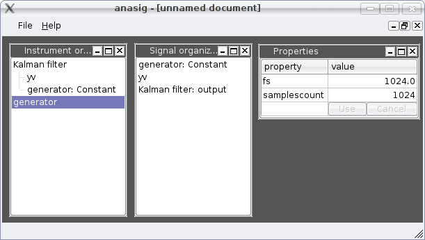
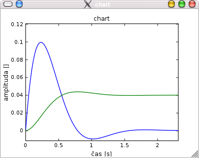
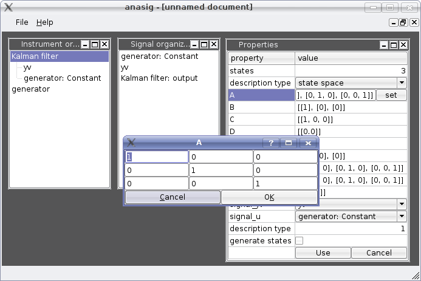

anasig je prototyp signálové analyzátoru. Je napsán v jazyce Python. Jeho uživatelské rozhraní (GUI) je tvořeno pomocí knihovny Qt. Používá řadu rozšiřujících modulů - Numeric, SciPy a matplotlib. Při návrhu jsem vycházel z uživatelského rozhraní programů podobného typu (např. LabShop PULSE od firmy Brüel&Kjær, Signal Analyser). Program využívá architektury MDI (Multiple Document Interface) a jeho rozhraní je tvořeno několika okny, které slouží k práci s nástroji (Instrument organiser), signály (Signal organiser) nebo slouží k zobrazování grafů (Charts) a vlastností (Properties).
Hlavní okno programu je tvořeno již zmíněnými organizéry.
V současné době je k implementováno pouze několik základních nástrojů:
Organizér signálů slouží k práci se signály. V tomto okně se také objevují signály vzniklé jako výstup nástrojů. Lze také načítat signály ze souborů kompatibilních s formátem programu MATLAB, modulu pickle pro Python souborů a WAV soubory. Dále je možno generovat několik základních typů signálů:
může být např. graf v publikační kvalitě získaný pomocí knihovny matplotlib. Tato knihovna je schopna grafy exportovat ve formátu SVG (Scalable Vectror Graphic). Díky tomuto formátu lze obrázek otevřít v libovolném grafickém editoru který tento formát podporuje (např. Inkscape) a provést dodatečné úpravy:
U všech nástrojů a signálů lze nastavovat řadu vlastností, které se liší dle charakteru daného objektu. Příklad nastavení dynamiky pomocí zadání matice stavového popisu u Kalmanova filtru, který je potomkem třídy LTI, lze vidět na následujícím obrázku:
